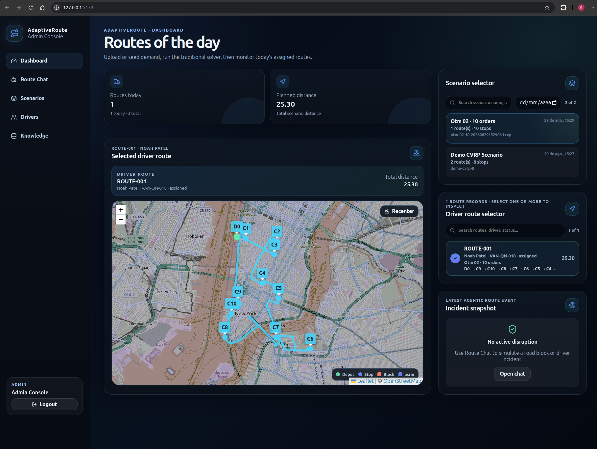
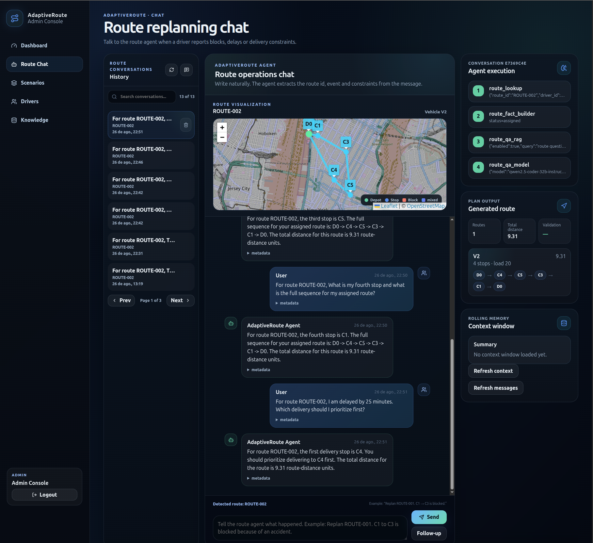

A fine-tuned routing policy for speed. A MILP solver for the guarantee.
Proof of concept · 5 daysGabriel Carvalho Domingos da Conceição
AdaptiveRoute · The problem
Routes are planned once. Reality changes all day.
A delivery route is optimised the night before. By mid-morning it is already wrong.
Network
A road closes
An accident blocks the segment the driver was routed through.
Demand
A customer cannot receive
Store shut, nobody on site, delivery window missed.
Priority
The order changes
A delivery becomes urgent after the plan was frozen.
Today the driver phones an operator, who re-plans by hand.
The optimisation asset built overnight is abandoned by 10am.
AdaptiveRoute · Why this is hard
Two obvious approaches, each with a disqualifying flaw
Option A
Ask a language model
Speaks the driver's language. Answers in seconds.
But: no notion of capacity. It will route
straight through the blocked road.
Option B
Re-run the optimiser
Provably correct. Respects every constraint.
But: it needs a formal model of the disruption,
not a sentence.
The gap is not optimisation, and not language.
It is the handoff.
Plausible output is not feasible output — the model produces something that
reads like a route but violates capacity or skips a customer. The optimiser has the opposite
problem: correct answers to a question nobody asked it, because someone still has to translate
“there was an accident between C7 and C6” into a blocked arc before it can run.
AdaptiveRoute · Design thesis
The model proposes. The solver decides.
The fine-tuned model is treated as a fast candidate generator, never as an
authority. Every plan it produces is parsed, checked against deterministic rules, repaired if it can be
repaired safely, and replaced by the MILP solver if it cannot.
Nothing reaches the driver without passing the same validation gate —
regardless of who produced it.
AdaptiveRoute · Two models, two jobs
Breadth where the problem is open. Precision where it is narrow.
ORCHESTRATOR · OFF THE SHELF
Qwen2.5-Coder-32B
Reads the driver's message, extracts the operational
event, answers questions about the route.
general purposetemperature 0.1
ROUTING POLICY · FINE-TUNED
Qwen2.5-7B + LoRA v5
Emits the sequence of stops. Nothing else. Trained on
the solver's own output.
specialisedtemperature 0
The 32B never touches a route.
The 7B never talks to a driver.
This is a right-sizing argument. Language understanding is open-ended and
needs breadth, so it gets a large general model off the shelf. Emitting a valid route JSON is a
narrow structured task that needs precision and speed, so it gets a small fine-tuned specialist
— and it sits on the hot path, so you are not paying 32B inference for every candidate. The two
are configured independently: separate base URLs, models and temperatures.
AdaptiveRoute · Architecture
FastAPI core, pluggable everywhere it matters
Engine, candidate generator and event extractor
are swappable by environment variable. Tests run in-memory — no GPU, no database, no model server.
AdaptiveRoute · The replanning cascade
Each stage is slower and more trustworthy than the one above it
When the existing plan survives the event, it is
reused and the model is never called.
AdaptiveRoute · The validation contract
One arbiter, independent of who wrote the plan
A plan is accepted only if every rule holds
Every active customer visited exactly once
Each route starts and ends at the depot
Vehicle capacity respected
No blocked arc traversed
Only known vehicles and active customers
No duplicate or inactive stops
Numbers cannot be hallucinated
The validator recomputes load and distance.
Failure is a prompt, not an error
Violations feed back. Three attempts, then the solver.
The model supplies only the visit sequence — every number in the final plan is
recomputed from the scenario, so a hallucinated distance cannot survive. When validation fails,
the specific violations (“capacity_violation: load 45, capacity 40”) are fed back as a structured
correction prompt rather than a generic retry.
AdaptiveRoute · The product
Admin console

Real road routingGeometry snapped to the street network
by OSRM, not straight lines between stops.
Fleet and scenariosOrders ingested, scenarios persisted,
routes assigned to named drivers.
Disruption watchThe incident panel is where a driver's
report surfaces on the operations side.
Worth pointing at the map legend: the “osrm” tag means these are real road
distances and real geometry. Without OSRM the system still works — it falls back to haversine and
straight-line geometry — which is fine for the maths but looks obviously synthetic on screen.
AdaptiveRoute · The agent at work
Everything so far, running

Agent executionThe trace from slide 7, step by step:
lookup, fact builder, retrieval, model.
Validated planRoute, total distance and validation state —
the contract, enforced.
Rolling memoryContext window carrying facts and
constraints across the conversation.
This is the slide to linger on. The right-hand column is the architecture made
visible: the execution trace is the LangGraph workflow, the plan output is the validation
contract, and the context window is what lets a driver say “and what about the next stop?”
without repeating themselves. The conversation itself is ordinary language — no commands, no
syntax.
AdaptiveRoute · Building the routing policy
Supervised fine-tuning where the optimiser is the teacher
How training data is made
Generate a synthetic CVRP instance
Solve it to optimality with HiGHS
Inject an operational event
Re-solve the disrupted scenario
Validate, then serialise the pair
The solver labels its own training set. The model learns to
imitate optimal replanning, not to invent it.
Configuration
Base model
Qwen2.5-7B-Instruct
Method
LoRA / QLoRA
Rank r
16
Alpha
32
Dropout
0.05
Quantisation
4-bit NF4
Compute dtype
bfloat16
Epochs
1
Hardware
RTX 3090 · 24 GB
Only the routing policy is fine-tuned. The
orchestrator stays off the shelf.
AdaptiveRoute · Model iteration
Four variants, one fixed benchmark
1,000 held-out scenarios, identical across every run.
Training data
Feasible
Capacityviolations
Blocked arcviolations
Exactmatch
v3
30K compact curriculum
91.7%
72
11
4.6%
v4
+ 70K hard continuation
92.9%
61
10
5.8%
v5
+ 20K error-driven
94.4%
46
9
5.6%
v6
+ 10K further error-driven
94.0%
50
10
5.4%
v5 selected. Highest feasibility, fewest violations
of both kinds, 100% valid JSON everywhere. v6 confirmed the curve had flattened.
Exact match is deliberately not the decision metric — a CVRP instance usually
admits several equally optimal plans, so matching the reference sequence measures conformity, not
quality. That is why v4 leads on exact match (5.8%) but v5 is the right pick: it wins on every
metric that describes whether the plan can actually be driven.
AdaptiveRoute · Capacity boundary
Where the model stops working
Measured, not estimated.
Customers
Valid
Failure mode
8
100%
—
9
100%
—
10
60%
customer omitted
12
33%
customer omitted
14
0%
customer omitted
Small samples: 3–5 scenarios per size.
The boundary
8–9 customers
Above it the model omits customers — it does not route
them badly.
A cardinality limit, not a routing-quality
problem. The fix is training data at 10–24 customers.
Beyond the boundary the plan is still correct — the cascade
falls through to the solver.
The omitted customers are the ones whose identifiers sit at the edge of the
training distribution — C10 and above, which the model rarely saw. That is why this reads as a
generalisation failure rather than an optimisation failure, and why a better prompt does not fix
it. Note the samples are small: 3–5 scenarios per size.
AdaptiveRoute · Engineering
What was built to make the result trustworthy
73
Python modules, ~11,800 lines
24
test files, runnable without GPU or database
11
architecture and evaluation documents
Immutable domain model throughout
Service / repository separation
Protocol interfaces at every seam
CI split: fast API and forked solver tests
bcrypt credentials, signed JWT, scoped CORS
Structured logs with request ids
AdaptiveRoute · Known limits
What we would fix before anyone depends on this
Scale
MTZ relaxation is weak. Solver calls still run inside
the request.
Data
Fully synthetic. No real traffic, telemetry or road
network.
The unguarded edge
Validation covers the plan, not the question
It proves the plan is right for the mutated scenario — not that the
mutation matches what the driver said.
This is the next thing to close.
On scale: OR-Tools or a branch-and-cut formulation for larger fleets, and a
worker queue so optimisation leaves the request path. On the unguarded edge: event extraction is
the one stage the trust boundary does not cover — a misread message produces a perfectly valid
answer to the wrong question, and no amount of plan validation can catch that.
AdaptiveRoute · Next steps
In priority order
Harden event extraction
Push the cardinality boundary
Move optimisation off the request path
Instrument the cascade in production
Validate against real operations
1 — confidence thresholds and explicit confirmation before mutating a scenario.
2 — curriculum training at 10–24 customers; evaluate by scenario size, not a random split.
3 — worker queue, persisted solver artifacts, tuned time limits per scenario class.
4 — track fallback rate and violation modes; they are the live measure of model quality.
5 — replace synthetic scenarios with historical routes and observed disruptions.
AdaptiveRoute · What the proof of concept established
The system stays correct when the model is wrong
The routing policy returns 94.4% feasible replans at the size it
was trained for
The remaining 5.6% is harmless — validation, repair, fallback
A measured boundary of 8–9 customers, not an assumed one
Natural language to validated route,
end to end
Built in five days. The interesting result is
not the model — it is everything built around it.
The claim is deliberately narrow: feasible at the size it was trained for. The
architectural claim is the broader one — because the system never relies on the model being right,
the failure rate stops being a risk and becomes a latency cost. And this is a working pipeline
rather than a demonstration of components: one message in, one validated route out.